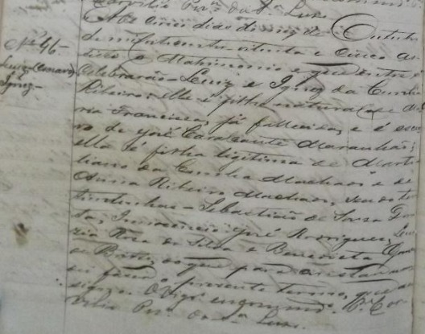
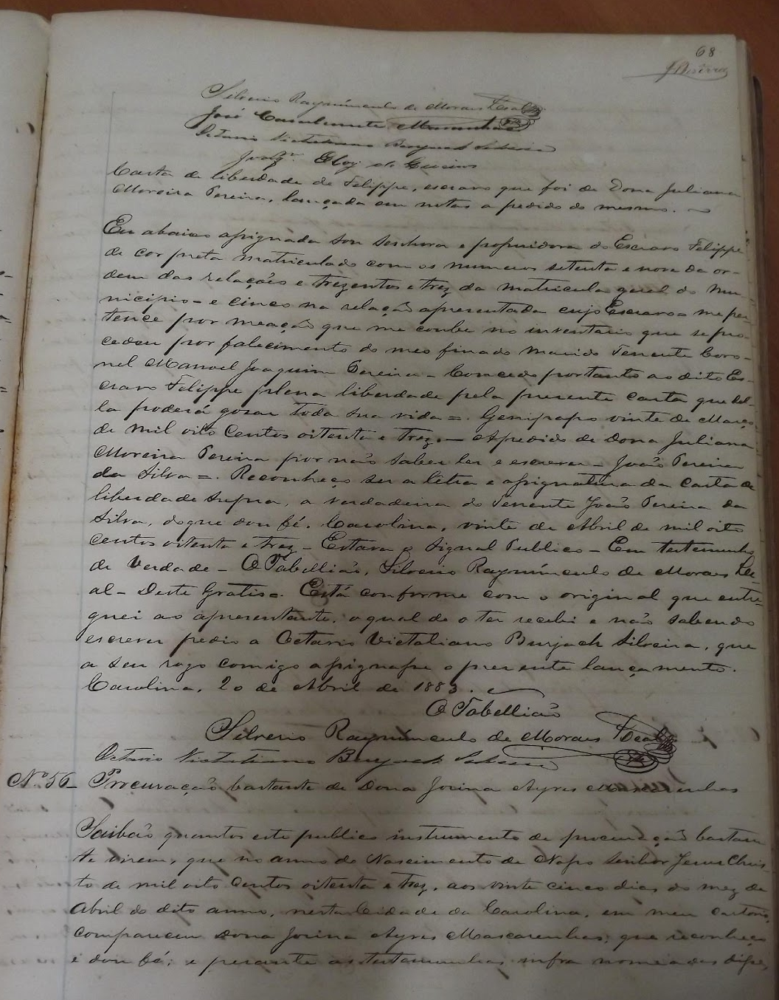

REGISTROS DE COMPRA E VENDA DE PESSOAS ESCRAVIZADAS.
As escrituras de compra e venda são documentos que demonstram a
[...] transação comercial de algum bem, onde estavam envolvidos compradores, vendedores e testemunhas. Denominava-se uma escritura porque era realizada por um tabelião e era registrada em livros cartoriais; era também pública porque estava sob controle do Estado, escrita por um burocrata imperial; e, finalmente, era uma compra e venda porque tinha o fim de transacionar de forma legal qualquer bem: casas, terras, móveis, escravos etc. Assim, este documento produzido durante o século XIX com o objetivo de tornar público e legal as relações comerciais e também com o fim de evitar problemas de embargo e herança, torna-se privilegiado para entender a dinâmica comercial de escravos, já que apresenta informações relevantes sobre os trâmites da obtenção de cativos na época (CARATTI, 2009, p.4).
Os registros de compra e venda de escravizados/as da Carolina na segunda metade do século XIX, analisados por mim, de uma forma geral têm a seguinte estrutura: no início foram colocados os dados gerais sobre o documento, tais como: a sua natureza (venda e compra), os nomes do/a comprador/a, vendedor/a e da pessoa que estava sendo transacionada (negociada). Logo em seguida, foi colocado o ano, mês, dia e local (cidade e província) onde foi registrada a escritura. Encontrei informações sobre os/as contratantes como, por exemplo, o local de residência, profissão e estado civil; caso os/as mesmos/as possuíssem algum título (Capitão, Coronel, Alferes, Dona…), também foi registrado. Sobre o/a escravizado/a, as informações variaram um pouco. Constava o nome, cor, idade, estado civil, profissão, origem, se tinha filhos/as e seu preço. Em alguns documentos encontrei a matrícula do/a cativo/a comercializado/a. Para tornar o documento legal, além da “fé” dada pelo tabelião havia a necessidade da assinatura das testemunhas que foram colocadas no final do registro.
Exemplo de um REGISTROS DE COMPRA E VENDA


Registro de Compra e Venda de Joaquim. (Livro de registro de compra e venda de escravizados/as 1875 - Tribunal de Justiça do Estado do Maranhão - São Luís-MA), p.73-75.
REGISTROS DE CASAMENTO DE PESSOAS ESCRAVIZADAS.
Sobre os matrimônios de escravizados/as as Constituições Primeiras do Arcebispado da Bahia recomendaram que, poderiam
[...] casar com outras pessoas captivas, ou livres, e seus senhores lhe não podem impedir o Matrimônio, nem o uso delle em tempo e lugar conveniente, nem por esse respeito os podem tratar peior, nem vender para outros lugares remotos, para onde o outro por ser captivo, ou por ter outro justo impedimento o não possa seguir, e fazendo o contrario pecão mortalmente [...] Pelo que lhe mandamos, e encarregamos muito que não ponhão impedimentos a seus escravos para se casarem, nem com ameaças, e mao tratamento lhes encontrem o uso do Matrimônio em tempo e lugar conveniente, nem depois de casados os vendão para partes remotas de fora, para onde suas mulheres por serem escravas, ou terem outro impedimento legitimo, os não possão seguir. E declaramos, que posto que casem, ficão escravos como de antes erão, e obrigados a todo serviço de seu senhor (VIDE,1853, p.125).
Oficializar a união diante de um padre não alterava a condição social e jurídica de homens e mulheres que viviam sob a escravidão. O casamento religioso, assim como outros ritos católicos, co-existiram em perfeita harmonia com as normas opressoras da sociedade escravista colonial e imperial brasileira. Na teoria e de acordo com os preceitos cristãos, senhores e senhoras não teriam motivos para ver em tais uniões algum tipo de ameaça para a estabilidade de suas propriedades.
Os registros de casamento encontrados por mim não trazem muitas informações sobre as pessoas envolvidas nesse rito religioso e social. Neles constavam a data, o lugar da realização do matrimônio, o nome do noivo e da noiva, onde moravam, suas filiações (se natural ou legítimo/a e condição social e jurídica dos pais), os nomes de seus/suas proprietários/as, das testemunhas e a assinatura do religioso que fez o registro e abençoou tal cerimônia. Não encontrei informações sobre a idade e profissão dos nubentes. A partir desses fragmentos de histórias contidos nesses documentos, também fragmentados, busquei compreender a dinâmica dessas relações dentro da sociedade sertaneja e escravista do sertão sul-maranhense do século XIX.
Exemplo de REGISTRO DE CASAMENTO
Registro de Casamento de Luiz e Ignez. Livro de Registro de Casamento 1881-1886 da Paróquia de São Pedro de Alcântara da cidade de Carolina. (Casa Paroquial da cidade de Carolina-MA), p.78V.
AS CARTAS DE LIBERDADE.
As cartas de liberdade “ Eram cartas ou títulos de alforrias (V.), documentos por meio dos quais os senhores legitimavam a liberdade concedida aos seus escravos. Era documento registrado em cartório e, com ele, o escravo ficava livre da tutela do senhor” (MOURA, 2004, p.89). A prática de registrar as cartas de liberdades nos livros de notas cartoriais estava ligado ao fato de que “[...] muitas alforrias eram um verdadeiro negócio envolvendo dinheiro, prestação de serviços, contratos de compra, troca e condições, fazendo-se necessário o seu registro” (SILVA, 2013, p.48). Esse ato
[...] protegia não só o liberto, mas também o senhor: para o primeiro, o registro evitava possíveis contestações quanto à vontade do proprietário, principalmente por parte dos herdeiros, além de evitar a escravização de libertos; para o segundo, o registro resguardava os termos acertados com o escravo, facilitando a cobrança do cumprimento das condições impostas TEIXEIRA, 2014, p.45).
Não havia um padrão para as cartas de alforrias (SILVA, 2013, p.48). Na documentação que estudei, por mais singular que cada história se apresentava, algumas informações estavam presentes, tais como: a data (dia, mês e ano) e local, o nome do escravizado/a alforriado/a, do senhor/a e/ou de quem registrava, das testemunhas, os motivos que levaram aquele/a homem ou mulher escravizado/a a conseguir sua alforria, o tipo da liberdade (gratuita ou comprada) e o valor, quando esta era paga pelo/a próprio/a liberto/a ou por terceiros/as. Não foi um hábito do escrivão ou da pessoa que fazia o registro da escritura de liberdade nos cartórios de Carolina no oitocentos, ao nos documentos que analisei, colocar a idade, a profissão, a cor e a origem do/a alforriado/a.
Exemplo de carta de liberdade
Carta de Liberdade de Fellipe. (Livro de Notas 1881-1890, Tribunal de Justiça do Estado do Maranhão - São Luís-MA), p.68.